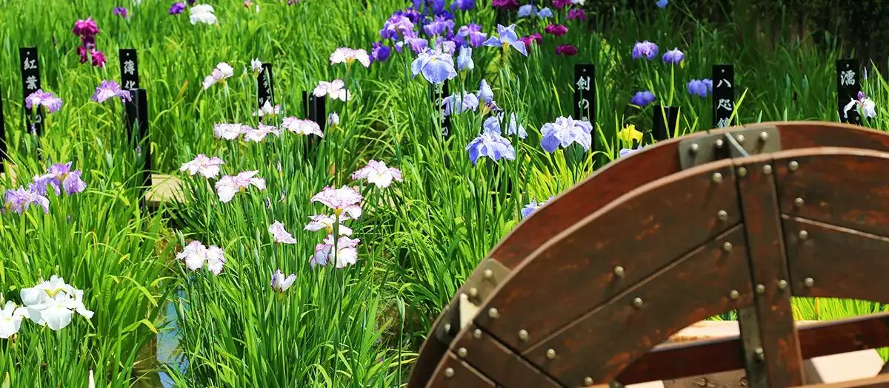

Adachi, Tokyo: things to do, food and stays
Adachi · Tokyo
Adachi
Highlighted on the Tokyo map.

Sights
Dining
Stamina En
スタミナ苑

Meat restaurant in Adachi, Tokyo.
Tsukemen Sanada
つけめん さなだ

Noodle restaurant in Adachi, Tokyo.
Hi wa Mata Noboru
陽はまたのぼる

Noodle restaurant in Adachi, Tokyo.
Kadoya
かどや

Sweets and bakery shop in Adachi, Tokyo.
Tsuke Men Wa Tokyo Hon
つけ麺 和 東京本店

Noodle restaurant in Adachi, Tokyo.
Senju Takeyabu
千寿 竹やぶ

Noodle restaurant in Adachi, Tokyo.
Kitasenju Niboshi Chuka Soba Karen
北千住煮干中華蕎麦 かれん

Noodle restaurant in Adachi, Tokyo.
Tanaka Soba Ten Honten
田中そば店 本店

Noodle restaurant in Adachi, Tokyo.
DEVIL CURRY

Japanese restaurant in Adachi, Tokyo.
Tanaka Shoten
田中商店

Noodle restaurant in Adachi, Tokyo.
Chuka Soba Watai
中華そば わた井

Noodle restaurant in Adachi, Tokyo.
Hakata Nagahama Ramen Ikki
博多長浜らーめん いっき

Noodle restaurant in Adachi, Tokyo.
Niboshi Shi Chuka Soba Yamagata Ya
煮干し中華そば 山形屋

Noodle restaurant in Adachi, Tokyo.
Ramen Fujimaru Nishiarai daishi ten
ラーメン富士丸 西新井大師店

Noodle restaurant in Adachi, Tokyo.
Raa Menya no Sakai San
らぁ麺屋のさかいさん

Noodle restaurant in Adachi, Tokyo.
Senju Chashu Ken
千住 チャーシュー軒

Noodle restaurant in Adachi, Tokyo.
Made in Tokyo
らーめん松

Noodle restaurant in Adachi, Tokyo.
Chaka
茶香

Sweets and bakery shop in Adachi, Tokyo.
Kameari Chuka Soba Mizushima
亀有中華そば水しま

Noodle restaurant in Adachi, Tokyo.
Drambuie
ドランブイ

Izakaya or bar in Adachi, Tokyo.
AYATORI
彩とり

Noodle restaurant in Adachi, Tokyo.
Menya Ryu
麺屋 龍

Noodle restaurant in Adachi, Tokyo.
jakku potto
じゃっくぽっと

Noodle restaurant in Adachi, Tokyo.
Showa Yakiniku Katano
昭和焼肉 かたの

Meat restaurant in Adachi, Tokyo.
Saiko Gyoza Bo
菜香餃子房

Chinese or Asian restaurant in Adachi, Tokyo.
LA VIE UN REVE
ラヴィアンレーヴ

Cafe in Adachi, Tokyo.
Senjushuku Coffee Monogatari
千住宿 珈琲物語

Cafe in Adachi, Tokyo.
Hachimoji
八文字

Izakaya or bar in Adachi, Tokyo.
MOTORA Reservation
MOTORA

European restaurant in Adachi, Tokyo.
pizza & cake via A
via A

Sweets and bakery shop in Adachi, Tokyo.
Wakaba Do
わかば堂

Cafe in Adachi, Tokyo.
Maguro Shirakawa
まぐろ白川

Seafood restaurant in Adachi, Tokyo.
Senju Shige
千住 しげ

Seafood restaurant in Adachi, Tokyo.
Ichiba Shokudo Sakanaya
市場食堂 さかなや

Seafood restaurant in Adachi, Tokyo.
Ayase Taishoken
綾瀬 大勝軒

Noodle restaurant in Adachi, Tokyo.
Washoku Itagaki
和食 板垣

Japanese restaurant in Adachi, Tokyo.